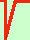

Forme indeterminate del tipo -
Di solito sono forme che si hanno quando si ha qualche radicale;
in ogni caso per risolverle basta ricordarsi dei metodi di
razionalizzazione
e moltiplicare per la stessa forma col segno in mezzo cambiato sia al numeratore che
al denominatore (ricorda che al denominatore se non c'e' niente c'e' sempre 1)
allora il limite diventa della forma ∞ / ∞ e posso applicare i metodi gia' visti
esempio
limx->
(x - x) =
-
=
= limx->
(x - x)
( x + x) /
( x + x)=
eseguiamo la moltiplicazione
=limx->
(x2 - x)/
( x + x)=
E' ora una frazione del tipo
/
e applicando la regola degli ordini di infinito il numeratore
ha ordine 2 ed il denominatore 1 quindi
=
|